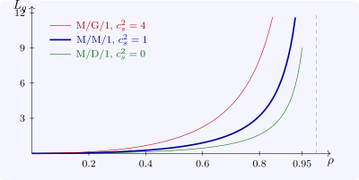

14.3 General service times
When service times are not exponential the number in the system is no longer Markov, but for one server and Poisson arrivals the mean queue is still known exactly.
Theorem 14.3.1 (Pollaczek–Khinchine). For the M/G/1 queue with service time \(S\) of mean \(1/\mu \) and variance \(\sigma ^2\), and \(\rho = \lambda /\mu < 1\), \[ L_q = \frac {\lambda ^2\sigma ^2 + \rho ^2}{2(1 - \rho )} = \frac {\rho ^2}{1 - \rho }\cdot \frac {1 + c_s^2}2, \qquad c_s^2 = \mu ^2\sigma ^2 . \]
Sketch. An arrival, seeing the time-average state (Poisson arrivals see time averages), waits for the \(L_q\) customers ahead of it, each needing \(1/\mu \) on average, plus the remaining service of the customer in service, if any. That customer is present with probability \(\rho \), and the mean remaining time of the service in progress, by the length-biased sampling of renewal theory, is \(\mathbb E[S^2]/2\mathbb E[S]\). So \(W_q = L_q/\mu + \lambda \mathbb E[S^2]/2\), and with \(L_q = \lambda W_q\) this gives \(W_q = \lambda \mathbb E[S^2]/2(1 - \rho )\), which is the formula since \(\mathbb E[S^2] = \sigma ^2 + 1/\mu ^2\). □
The queue depends on the service time only through its mean and its variance: at the same load, deterministic service (\(c_s^2 = 0\), M/D/1) halves the queue of M/M/1 (\(c_s^2 = 1\)), and highly variable service (\(c_s^2 = 4\)) multiplies it by \(2.5\) (Software 14.5.3). Reducing variability, by standardising tasks or separating long jobs from short ones, shortens queues as surely as adding capacity.

Questions on this section
Stuck on something here? Ask below and it stays attached to this topic.